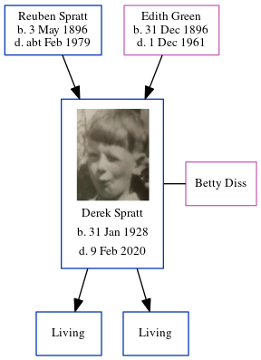

Derek John Spratt 1928 - 2020
[ Home ] | [ Calendar ] | [ Surnames Index ] | [ Errors ] | [ Family History ]The child of Reuben Spratt (an agricultural labourer) and Edith Green, Derek Spratt, the first cousin once-removed on the father's side of Nigel Horne, was born in Thanet, Kent, England on 31 Jan 19281,2,3 and. He married Betty Diss (with whom he had 2 surviving children John and Malcolm) in Marylebone, London, England around Feb 19564. About 2003, he was living at 35 Cartmel Drive, Dunstable, Bedfordshire, England5.
He died on 9 Feb 2020 in Dunstable1.
Parents
- Reuben was born on 3 May 1896
- Edith Maud Caroline was born on 31 Dec 1896
Citations
- England & Wales Deaths 2007-2020 - Findmypast
- England & Wales births 1837-2006 - Findmypast
- England & Wales, Birth Index: 1916-2005 Online publication - Provo, UT, USA: The Generations Network, Inc., 2008.Original data - General Register Office. England and Wales Civil Registration Indexes. London, England: General Register Office. © Crown copyright. Published by permission of the Cont
- England & Wales marriages 1837-2008 - Findmypast
- UK, Electoral Registers, 2003-2010
Media
Derek Spratt

England & Wales births 1837-2006 Transcription - BMD-B-1928-1-AZ-001173-008
England & Wales marriages 1837-2008 - BMD/M/1956/1/AZ/001513/126
England & Wales Deaths 2007-2020 - BMD/D/MILLEN/004039827
Family Tree
Map
Generated by ged2site. Last updated on Jul 3, 2024
Known Issues
Parent Reuben is listed in the residence for 1935, but this child is not
Listed in the residence for abt 2003, but spouse Betty Diss is not
1939 UK register information missing